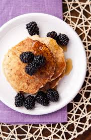

Document
Steel Cut Oat Pancakes

Description
This is an absolutely delicious way to kick off your morning! Most
people tend to use white flour for their pancakes, but fail to recognize
gut health, which is what steel cut oats excel in! This is a delicious yet
healthy alternative to your own pancakes, and really fuel you!
Ingredients Needed
- 1 Tbsp Collagen Powder
- 2/3 Cup Steel Cut Oats
- 1 Egg
- 1/2 Banana
- Honey
- Vanilla Extract
Instructions
- Cut up the half banana into pieces and put in small blender.
- Dump all steel cut oats and collagen powder into blender.
- Crack egg and dump into blender.
- Add a drizzle/circle of honey in the blender.
- Add a small splash of vanilla extract to the blender, and blend.
- While blending, warm pan up with oil, and dump mixture onto pan when ready to cook.
- Cook pancakes as needed.
- Serve and enjoy!